The complete guide to xGEO Live: every screen, every station and every key, how the physics shapes your choices, and how to win CLOSE PASS in low Earth orbit.
xGEO Live is a game about the quiet contest between satellites. You fly one inspector satellite, watch another nation's inspector, and use real orbits, real sensors and real radio to make it leave without starting a war.
What kind of game this is
There are no lasers and no explosions. Satellites in low orbit move at nearly 8 km/s, but they meet and part slowly, a few metres a second at a time. Every move costs fuel you can never get back, every look depends on where the Sun is, and every radio burst you hear is worked out from real signal physics.
The game runs on xGEO Core, a simulation engine that computes orbits with the Earth's flattened shape and the pull of the Sun and the Moon. Nothing you see is scripted to look right: it is computed. When the handbook says something "costs 2.3 m/s", that number came out of the same physics a mission planner would use.
You don't need to know orbital mechanics. The planner does the maths and tells you the price. This handbook explains the few rules of thumb that make you better at it.
How to use this handbook
New to the game? Start the game and follow the tutorial card. It teaches the whole program in 24 short steps. Then read chapters 2 and 12 to learn the mission and your opponent.
Looking something up? Chapters 3 to 11 describe each screen and station in turn. The cheat sheet (page 36) and the glossary (page 37) are made for printing.
What you need
A PCDesktop or laptop. Phones and touch screens are not supported.
A browserCurrent Chrome, Edge or Firefox with WebGL 2.
Mouse and keyboardA wheel or trackpad for zooming. A middle button helps.
About 130 MBThe first load takes a minute. Your browser then keeps it.
1920 × 1080 or largerSmaller works, but windows overlap. Press F11 for full screen.
First clickClick inside the game once after it loads, so it gets your keyboard. Some browsers keep F1 to F7 for themselves until you do.
xGEO Live · Operator's Handbook2
Contents
Contents
1Getting started: the title screen4
2The mission: CLOSE PASS6
3The console8
The top bar and the menus9
Overview and Selected item11
The Timeline and Events12
4The 3-D view and your contacts13
5Orders15
6The planner16
Operational: going somewhere17
Tactical: close moves19
Strategic, and dragging an orbit20
7The telescope21
8The Listening station22
9Being seen: the heat forecast24
10Tracking and the ground radars25
11Database, Campaign and the sums26
12How Cosmos 2612 behaves27
13The tutorial, step by step28
14Walkthrough: a winning game29
15The debrief and the replay32
16Field guide: playing well33
17The physics you feel34
18Questions and problems35
Cheat sheet36
Glossary37
Words in this handbook
Labels you see on screen are written LIKE THIS. Keys look like F3. The game can use plain words or military ones (see Terms, page 10). This handbook uses the plain words and gives the military one in brackets the first time.
Real and invented
ICEYE-X36 and Cosmos 2612 are real satellites, flown from their public orbits and published specifications. The five ground radars are real sites. WATCHMAN-1 is invented, loosely modelled on the US GSSAP inspectors, and what happens in the game is fiction.
xGEO Live · Operator's Handbook3
1 · Getting started
The Title Screen
The game opens on the live Earth turning slowly behind the menu. Any key or click skips the short intro.
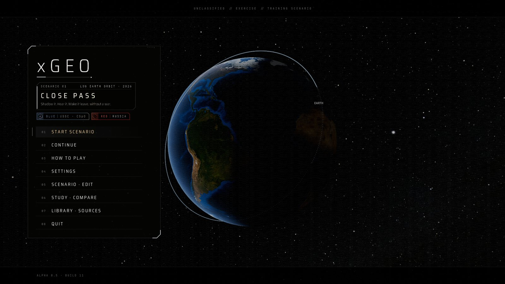
The title screen. The block at the top names the scenario: SCENARIO 01, CLOSE PASS, low Earth orbit, 2026.
Item
What it does
START SCENARIO
A new game of CLOSE PASS, with the tutorial on. Time starts paused.
CONTINUE
Resumes your save. Greyed out when there is none.
HOW TO PLAY
A one-page briefing: the goals, the four things you do, and the keys.
SETTINGS
Terms (plain or doctrinal), music and effects volume.
SCENARIO · EDIT
Change the scenario's numbers, then play them (page 5).
STUDY · COMPARE
Run many games of each plan and compare them (page 5).
LIBRARY · SOURCES
Where the numbers come from, with why each source was chosen.
QUIT
Leaves the game.
Pages beside the menu
Each item except START, CONTINUE and QUIT opens a page beside the menu (under it, on a tall screen). Close a page with ESC CLOSE, the Esc key, or by clicking the same item again.
Saving and continuing
There is one save. The game writes it:
whenever you go back to the title screen (Esc with no window open, or File › Save and go to the menu);
automatically, once for every day of mission time;
with File › Save and quit (desktop program only).
The save is deleted when you leave the debrief, so a finished operation can't be continued. A continued game has no tutorial.
Settings
Setting
Choices
TERMS
PLAIN or DOCTRINAL. Plain words, or the terms of US joint and Space Force doctrine. The game is the same either way. You can also switch in game from the View menu.
MUSIC
A volume slider.
EFFECTS
Volume of clicks, alarms and drives.
NoteTerms, the volumes, map layers, contact symbols and window sizes are all remembered between games.
Getting started4
1 · Getting started
Edit, Study, Library
xGEO is a simulation first. Two pages on the title screen let you change the scenario's numbers and test plans against each other over many runs.
Scenario · edit
Close Pass's main numbers, each with the scenario's own value shown beside it in grey. Change any of them and press PLAY EDITED. Edits are kept until you press RESET.
Group
What you can change
START
How far behind X36 WATCHMAN-1 and Cosmos 2612 start (20 km and 5.1 km), the catalogue's error on Cosmos (0.2 km), the operation's length (2 days).
When it gives way (5 km), how far it moves away (8 km), how many times it gives way before leaving (2), when it feels unwatched (50 km), the closest it will come to X36 (0.5 km).
RULES AND TENSION
X36's keep-out (1 km), what counts as a good track (1 km, 80 % of the time), tension per crowding (5) and per hour too close (12), when it leaves (50) and when war breaks out (100).
SCORE WEIGHTS
The points for each goal (40, 20, 20, 10, 10).
SAVE AS FILE writes the whole edited scenario to a file you can run with xGEO Core's command-line tools.
CarefulSTART SCENARIO on the menu always plays the scenario as published. Only PLAY EDITED uses your edits.
Study · compare
Plays CLOSE PASS many times for each course of action and puts the results side by side. Each run draws Cosmos 2612's habits afresh from the ranges you set, so a plan that only works against one exact opponent shows up as luck.
COURSES OF ACTION:Do nothing (always run, as the baseline), Shadow Cosmos 2612 and Guard ICEYE-X36.
RUNS: 10 to 400 for each plan. About 3 seconds a run, shared over your computer's cores.
HOURS: how long each run lasts (6 to 168).
The unknowns: a low and a high value for each of Cosmos's habits.
Press RUN STUDY. The table then shows, for each plan: how often it won (with a 95 % range), its average score, how much better it did than doing nothing in the same worlds, fuel used, the closest Cosmos came to X36, and which unknown mattered most.
Desktop onlyA study starts extra copies of the program, which a browser can't do. Run studies from the desktop program.
Library · sources
Every reference the numbers rest on, grouped by subject, each with a line on why it was chosen. In game it is under Help.
Remember
The score, the goals and Cosmos's habits are design values. A study tells you which plan does better in this model, not what would happen in real life.
Getting started5
2 · The mission
CLOSE PASS
Monday 26 October 2026, 21:00 UTC. Low Earth orbit, about 540 km up. A Russian inspector satellite is working its way round a US radar satellite. You have two days.
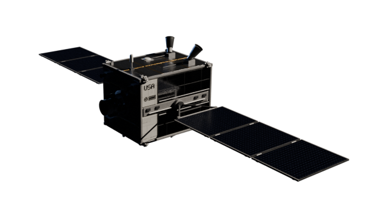
Your orders
Cosmos 2612 is closing on ICEYE-X36. Make it leave before it finishes its look. You have no weapons. No war.
In October 2026 the Russian satellite Cosmos 2612 was reported working its way round the commercial radar satellite ICEYE-X36. That really happened, and the game starts from it. What follows is invented: the US sends its own inspector, WATCHMAN-1, to stand beside X36 and make the visitor's job hard.
Cosmos 2612 has a plan. It means to park in three spots near X36, each for six or eight hours, to study it up close: 2 km behind, then 2 km ahead, then 0.8 km behind. When it has finished all three, it goes home with what it came for, and you have lost.
It doesn't want to be watched. It keeps a 5 km bubble round itself, and if WATCHMAN-1 parks inside that bubble while it can see you, it gives way and moves to the far side of X36. Do that enough times and it gives up and leaves.
But it isn't alone either. It reports home by radio every few hours. Every time you crowd it, tension rises in both capitals. Push too hard, too close, and it could end in open conflict, which loses the game outright.
So the mission is a balance: get alongside early, keep a good track on it, crowd it at the right moments, don't go nearer than you need, and spend as little fuel as you can.
You start 20 km behind X36 on the same orbit. Cosmos 2612 is 5.1 km behind X36, 15 km from you. It has already started.
Who's who
YOU · BLUE · WCH-1
WATCHMAN-1
US inspector, invented. 675 kg. Four 22 N thrusters on hydrazine, about 260 m/s of fuel in all. A 0.3 m telescope that sees in visible light and a radio receiver. No weapons, no radar.
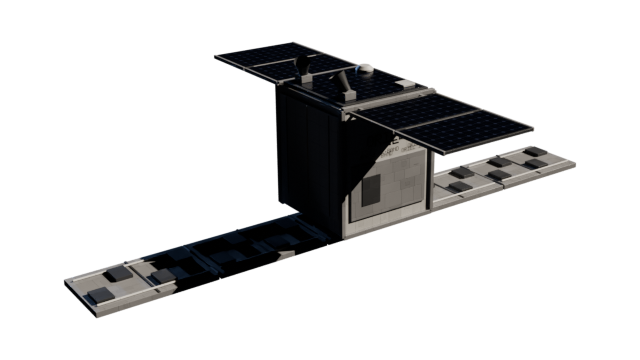
PROTECT · GREEN · X36
ICEYE-X36
A real commercial radar satellite that images the ground (ICEYE US). 90 kg with a 3.25 m radar antenna. It has no engine, so it can't get out of the way.
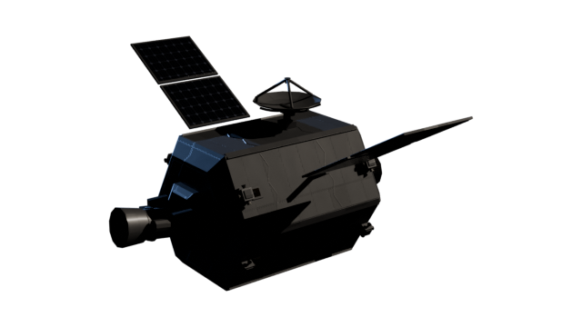
THE INSPECTOR · RED · TRK 4423
COSMOS 2612
A real Russian inspector satellite (NORAD 68762). About 500 kg with only about 90 m/s of fuel. A small infrared telescope it watches you with. It radios home on 2,250 MHz.
YOUR EYES · BLUE · SITES
Five ground radars
Real sites: PFISR in Alaska, LeoLabs in Texas, Arizona and New Zealand, and the Space Fence on Kwajalein. Each sees Cosmos only while it passes overhead.
The mission6
2 · The mission
Goals and Score
Five goals. Two of them end the game if you fail them. The other three only cost you points. Press F1 in the game to see them ticked off as you play.
Goal, as the game writes it
Kind
Points
How it is judged
Make Cosmos 2612 break off before it finishes its look at ICEYE-X36
Must not fail
40
Won when it leaves. Lost if it finishes all three stops. Half marks if it is still at work when the two days end.
Keep Cosmos 2612 more than 1 km from ICEYE-X36
Points
20
Full marks if it never comes inside 1 km. Otherwise (closest ÷ 1 km)², so 500 m earns a quarter.
Keep a good track on Cosmos 2612 (within 1 km) at least 80 % of the time
Points
20
Checked every ten minutes: is your track sure to within 1 km, and right? Full marks at 80 % or more.
Use no more than half of WATCHMAN-1's fuel
Points
10
Full marks with a quarter or less used, falling to none with all of it used. Fails past half.
Stay below open conflict (escalation 100)
Must not fail
10
Lost at 100. Points fall with the final escalation: at 30 you keep 7 of the 10.
How it ends
Get alongsidePlot move, then Match orbit
5 km
Crowd itPark that close while it sees you
It leavesThe third time, it gives up
Operation completeCosmos 2612 gave up, climbed away and left. Your score is out of 100, made of the five goals above.
Operation failedIt finished its look, or escalation reached 100. Either ends the game at once.
The 2 days are upNeither happened in time. You get half the points for the first goal.
A worked score
It leaves (40), never inside 1 km of X36 (20), a good track 76 % of the time (19), 30 % of the fuel used (9.3), final escalation 15 (8.5). Total 97.
Colours in the debrief
Green from 70 up, amber from 40, red below 40.
The mission7
3 · The console
One Screen
Everything happens on one screen: a live 3-D view in the middle, the contact list on the right, the timeline along the bottom. Hover over anything and a card explains it.
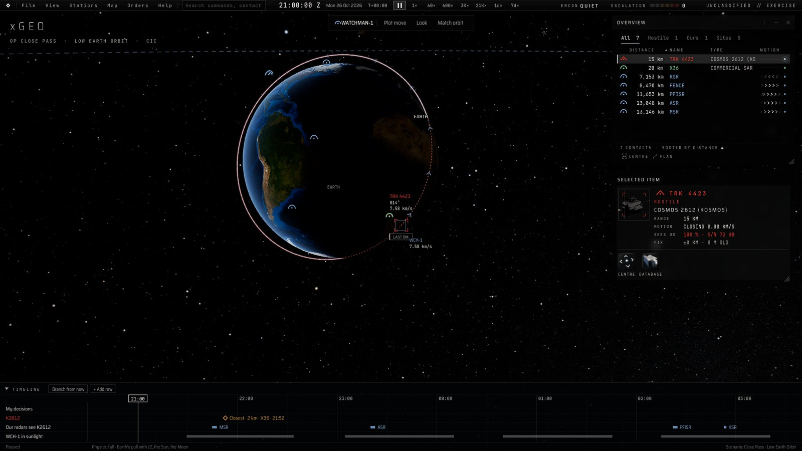
1234567891011
1
Menus and searchFile, View, Stations, Map, Orders, Help. Every command, with its key. Type in the search box to find one.
7
Selected itemWhat you know about whatever you clicked: range, motion, whether it can see you, how sure your fix is.
2
ClockUTC time (Z), the date, mission time (T+), and the time rate, from pause to a week a second.
8
A contactTRK 4423 is your track on Cosmos 2612. Its label gives course and speed.
3
EMCON and escalationWhether you are giving yourself away, and how close the crisis is to war (0 to 100).
9
The 3-D viewThe Earth, its day and night, your orbit, and the ground radars as rings on the surface.
4
OperationOP CLOSE PASS · LOW EARTH ORBIT.
10
TimelineThe next seven hours: your decisions, Cosmos's closest pass, when our radars see it, when you're in sunlight.
5
Action barThe ship you act from and its three orders: Plot move, Look, Match orbit (keys 1 to 3).
11
Status linePaused or running, the physics in use, the scenario. Events show here too (page 12).
6
OverviewEvery contact, nearest first. Click a row to select it; double-click to centre on it.
The console8
3 · The console
The Top Bar
A thin bar across the top holds the menus, the search box, the clock, and the two numbers that decide how the crisis is going.
The clock: 21:30:00 Z is UTC. Then the date, the mission time T+00:30, the pause button and the rates.
Time
The game starts paused. Time only moves when you let it. Click a rate, or use [ and ] to step slower and faster. Space pauses, and from pause it resumes at 600×.
Button
Each real second is
Use it for
1×
1 second
Watching a burn up close
60×
1 minute
Near the target, listening
600×
10 minutes
Coasting to a meeting
3K×
1 hour
Waiting for Cosmos to move
21K×
6 hours
Long waits, with care
1d×, 7d×
1 day, 1 week
Not useful in a 2-day mission
One trip round the Earth takes about 95 minutes. At high rates your computer may not keep up: the game then runs as fast as it can and the clock shows the real rate.
EMCON, escalation, classification
EMCON (emission control) reads QUIET while you only listen and LOUD while any of ours sends a radar beam or jams. WATCHMAN-1 has neither, so in CLOSE PASS you are always quiet. Being quiet matters: if Cosmos hears you, it goes silent.
ESCALATION is a bar of 24 cells and a number from 0 to 100: how close the two sides are to open conflict. It turns amber at 25, where Cosmos turns cautious, and red at 50, where it leaves. At 100 you lose. Chapter 12 lists exactly what raises it.
UNCLASSIFIED // EXERCISE reminds you this is a training scenario: invented events on real physics.
Search
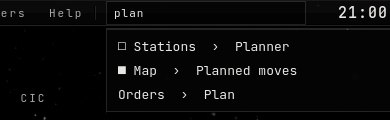
Type part of any command into Search commands, contacts…. Up to 12 matches appear as Menu › Item. Enter runs the first, Esc clears it.
The console9
3 · The console
The Menus
Every command in the game is in one of six menus, with its key beside it. Hover another title while one is open to switch; click elsewhere or press Esc to close.
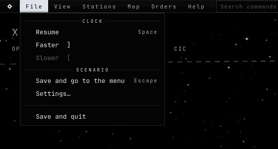
File. Pause or resume, faster, slower. Save and go to the menu (Esc), Settings, Save and quit.
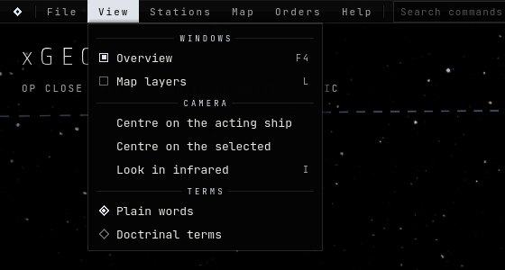
View. Show the Overview (F4) and Map layers (L). Centre the camera on your ship or the selection. Look through the telescope (I). Terms: plain words or doctrinal terms.
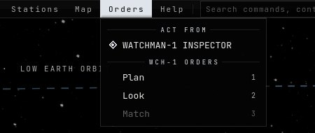
Orders. The acting ship's orders with their keys: Plan 1, Look 2, Match 3. Greyed when not possible now. ACT FROM picks the ship you act from.
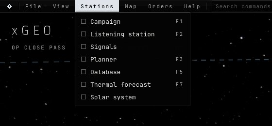
Stations. The windows: Campaign F1, Listening station F2, Signals, Planner F3, Database F5, Thermal forecast F7, Solar system. A tick marks each one that is open.
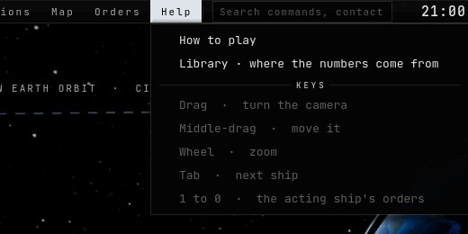
Help. How to play, the Library, and a reminder of the mouse keys.
Map
The same list as the Map layers panel (page 14): tick what the 3-D view draws, or go Back to the defaults.
Terms
Plain words and doctrinal terms change only the words, never the game. Some pairs:
Plain
Doctrinal
Listening station
EW console
Plan a move
Maneuver planner
Find direction · Identify signal
DF · Classify
Fuel
Δv
What you must do
Objectives
How it went
After-action review
With doctrinal terms on, hover cards also show the formula behind a number.
The console10
3 · The console
Overview and Selected
Top right: every contact you know of, and under it everything you know about the one you picked.
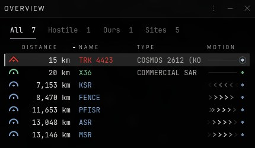
Overview F4
Tabs, each with a count: All, Hostile (Cosmos), Ours (WATCHMAN-1), Friendly (X36, which you protect) and Sites (the five radars).
Columns: DISTANCE from your ship (your own row says YOU and stays on top), NAME, TYPE and MOTION. Click a column title to sort; click again to reverse.
MOTION: chevrons flow inward while a contact closes on you and outward while it opens, faster when quicker. A beating dot means a sensor holds it right now; a hollow ring that fades means it hasn't been seen for a while. The whole row fades as a track gets old.
Click a row to select it, double-click to centre the camera on it, right-click for its orders. Centre and Plan at the foot act on the selection.
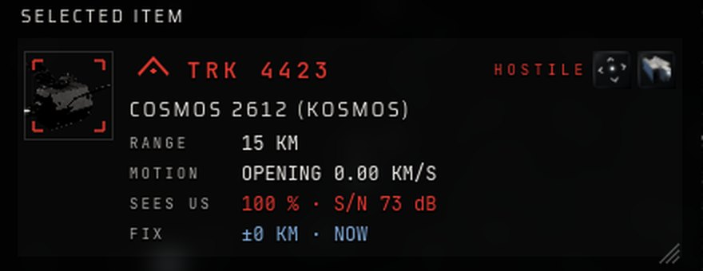
Selected item: a contact
RANGE
How far it is from your ship.
MOTION
CLOSING or OPENING, and how fast, in km/s.
SEES US
Its telescope's chance of seeing you on each look, and the signal-to-noise. Red when it would see you.
FIX
How sure you are of where it is (±, at 2σ), and NOW or how old the last sighting is.
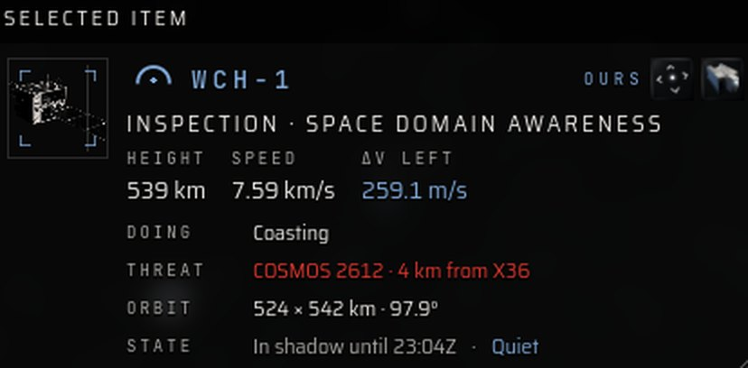
Selected item: one of ours
HEIGHT · SPEED
Above the surface, and orbital speed.
ΔV LEFT
Fuel, as the speed change you can still make.
DOING
Coasting, or Burn set for 22:40Z.
THREAT
The nearest hostile and how far it is.
ORBIT
Lowest × highest height, and tilt.
STATE
Lit or in shadow, until when, and Quiet or Loud.
Click the name to open its Database page.
The console11
3 · The console
The Timeline and Events
The Timeline along the bottom is your look ahead: the next seven hours, on the same clock as everything else.
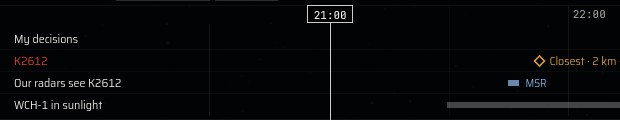
Four rows to begin with. The boxed 21:30 is now; the grid is every half hour.
The rows
My decisions
Burns you have set, and the move the planner has open (Move WCH-1 by 21:00).
TRK 4423
The nearest hostile: its closest pass to anything, as Closest · 2 km · X36 · 21:53.
Our radars see TRK 4423
A bar for each radar pass, named PFISR, MSR, KSR, ASR or FENCE.
WCH-1 in sunlight
Bars while you're lit. The gaps are Earth's shadow.
+ Add row
Add up to nine rows, from four groups:
Platforms: any craft's distance from you, height, or sunlight.
Sensors: when each radar sees each craft, and when Red's telescopes see you.
Conditions: when you are within 1, 5, 10, 25 or 100 km of Cosmos; when a craft is in shadow.
Orbits: equator crossings, highest and lowest points, height.
Hover a row's name for an × to remove it. Click the arrow by TIMELINE to fold it away.
Branch from now
Try something without losing what you have. Branch from now keeps the present as Run 1 and plays on as Run 2. Tabs appear on the title line; click one to go back to that run, exactly where you left it.
A good use
Branch before a big move. If Cosmos reacts badly, go back to Run 1 and try a smaller one. Branches are not saved to disk.
Events
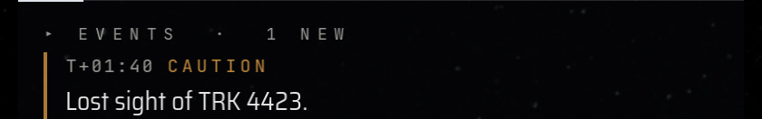
Bottom left. Folded, it shows the newest event and how many are new; click to see the last four. Each has its mission time and a class:
WARNING
Act now: a burn seen, tension near a limit.
CAUTION
Worth knowing: lost sight of a track.
NOMINAL
Good news: it gave way.
ADVISORY
For the record: it parked, you burned.
The console12
4 · The 3-D view
Moving Around
The view is a real 3-D picture of the Earth and everything near it, from 4 metres away to beyond the planets. The camera always turns round a focus: your ship to begin with.
Do this
To
Left-drag
Turn round the focus
Right-drag or middle-drag
Slide the view off the focus (Shift + left-drag works too)
Wheel
Zoom in and out
WS
Turn over and under
AD
Turn around
QE
Zoom out and in
Hold Shift
Keys three times faster
Click
Select a contact
Double-click
Focus on a craft, the Earth or the Moon. Ours and identified craft come in close
F
Close-up on the selection
Tab
Focus on the next object
Right-click
Orders for what is under the pointer (page 15)
When several objects sit on top of each other, a left click opens a small SELECT list to pick one. Camera keys do nothing while you type in a box or a station is open.
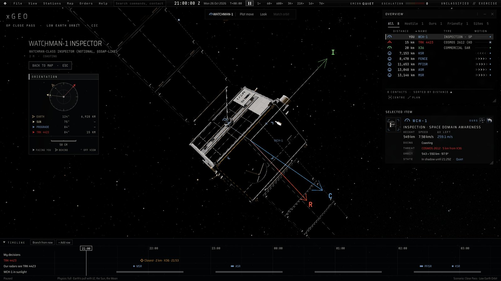
Close-up (F) on WATCHMAN-1: the real model, lit by the real Sun, with its axes. Esc or a double-click on empty space backs out.
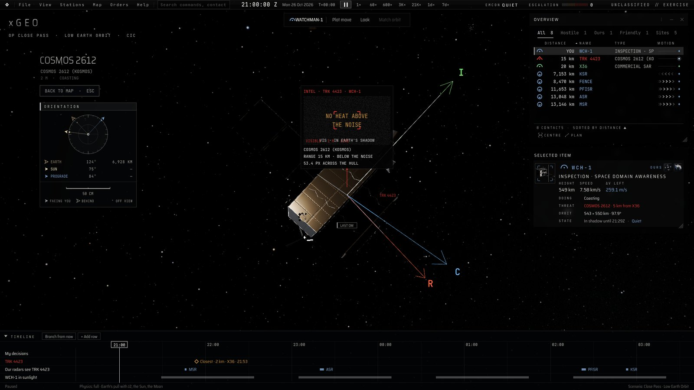
Cosmos 2612 up close. You can only come in on a craft you have identified.
The 3-D view13
4 · The 3-D view
Contacts and Layers
Every craft on the map is drawn where you believe it is. For your own ships that is the truth. For Cosmos 2612 it is your track: a best guess with a size.
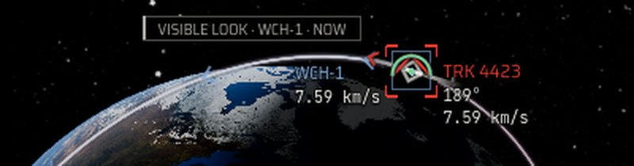
WCH-1 and TRK 4423, 15 km apart. The plate VISIBLE LOOK · WCH-1 · NOW marks a fresh telescope sighting.
Ours and friendly craft wear an arc over a dot; a hostile, a pointed roof; an unknown, an open box. Ground radars are circles on the Earth. In Map layers you can switch to the military MIL-STD-2525D frames instead.
Hovered or selected, a contact shows three lines: name, course and speed. Selected, a hostile also shows its uncertainty region: the space it could be in, drawn at 2σ, a size that holds it most of the time.
When you lose sight of it
A contact you can no longer see stays at its last known position, drawn dashed and fading, with an age ring that fills clockwise and a chip such as LAST 2H 14M. Near the end it reads DROPS IN 3H 10M, then ABOUT TO DROP.
A track is dropped after 24 hours unseen, or once it is so unsure it could be anywhere. Seen again, its icon jumps to the new fix with a short ring.
Recent sightings show as pings for half an hour: telescope lines, radio bearings and radar fixes.
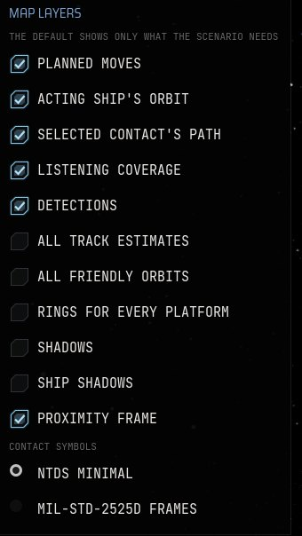
Map layers L
Tick what the view draws. The panel lists only the layers that fit the scenario. The main ones:
Planned moves
Your transfer arcs, with hour marks
Acting ship's orbit
Where you coast next
Selected contact's path
Where it goes next (Red: your estimate)
Detections
Last half hour's sightings
All friendly orbits
X36's orbit too
Proximity frame
Close up: the R, I and C axes and the other ship's path
Ship shadows
Hull shadows up close; costs frame rate
Your choice is remembered next time.
The 3-D view14
5 · Orders
The Action Bar
WATCHMAN-1 has three orders, on the bar at the top centre and on the number keys. None of them is a weapon. Presence is the tool.
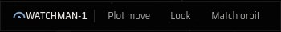
1
PLOT MOVEOpens the planner on the selected contact (same as F3). Work out when to burn and what it costs.Uses fuel
2
LOOKThe telescope view of the selection (same as I). Far off a point of light, close in the hull itself.Quiet
3
MATCH ORBITOne burn now that puts you on the selected craft's orbit where you are, so you coast alongside it.Uses fuel
Match orbit, in detail
Arriving isn't stopping. A transfer brings you to the target, but you fly past at a few tenths of a metre a second. Match orbit cancels that difference, so you stay beside it.
It needs a contact selected that is within 5,000 km, and enough fuel. Its hover card ticks off each condition and shows the cost. Matching Cosmos uses your track's idea of its speed, so a good track gives a better match.
Grey means not now
An order that can't be done is greyed out. Hover over it and the card says why, for example Get within 5,000 km first: now 6,120 km. The name at the start of the bar is the ship you act from; click it to centre on it.
Hover cards
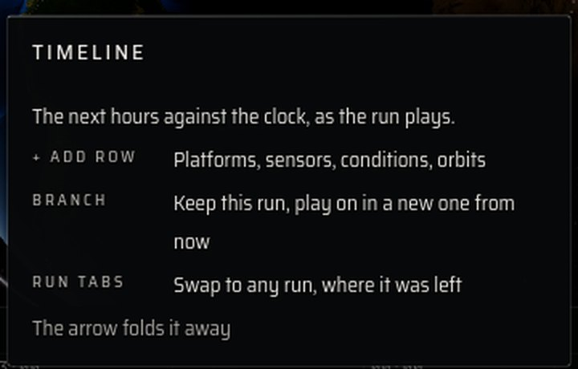
Rest the pointer on anything for a third of a second and a card explains it: a title, short rows, ticks and crosses for conditions, amber for prices, and the keys.
Right-click a contact
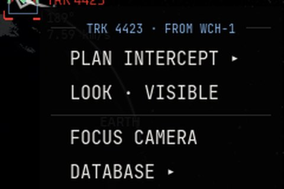
PLAN INTERCEPT ▸
Opens the planner on it
LOOK · VISIBLE
Points the telescope at it (the same as Look, key 2)
FOCUS CAMERA
Turns the view round it
DATABASE ▸
Its page in the Database (F5)
A craft that carries counterspace effects, such as a jammer, also gets an EFFECTS heading here. WATCHMAN-1 carries none, so CLOSE PASS does not show it.
Right-click empty space for FOCUS WCH-1 and MAP LAYERS….
Burns are seen
Every burn makes your thrusters glow. Cosmos's telescope can catch it, and if it sees one of ours burning it goes quiet on the radio for six hours. Listen first, then move.
Orders15
6 · The planner
Plan a Move
The planner does the orbital maths. You say where to go; it solves every way there over the next day, under full gravity, and offers the best ones with their price.
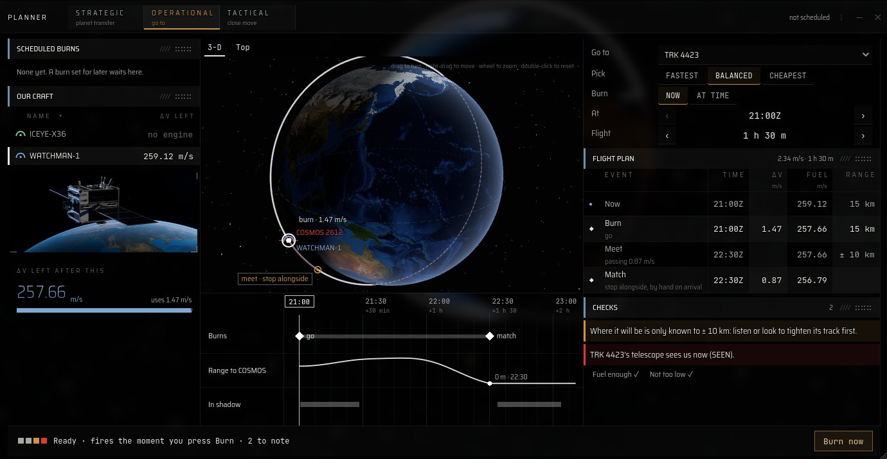
Going to TRK 4423, BALANCED: burn now for 1.47 m/s, fly 1 h 30 m, then 0.87 m/s to stop alongside. 2.34 m/s in all, leaving 256.79 m/s.
Opening it
Select a contact and press 1Plot move or F3, or right-click it and choose PLAN INTERCEPT. With your own ship selected it opens asking where to go.
Three tabs
STRATEGIC
A trip to another planet (page 20).
OPERATIONAL
Go to a craft, an orbit, the Moon or an Earth–Moon Lagrange point. This is where most moves start.
TACTICAL
A close move: one small push, fired now, in the target's own frame (page 19).
The parts
Left:SCHEDULED BURNS waiting to fire; OUR CRAFT (click one to plan for it); ΔV LEFT AFTER THIS, green if you can afford it, with a bar of what this plan uses.
Centre: the picture, in 3-D or Top view (drag to turn, wheel to zoom, double-click to reset), and a timeline under it.
Right: the form, the FLIGHT PLAN table and the CHECKS.
Foot: one lamp per check, the ready line, and Burn now.
Any open plan also shows on the main map as PLANNED MEETING, with how long until you get there.
The planner16
6 · The planner
Operational: Going Somewhere
Pick a destination, pick a trade between time and fuel, and choose when to burn.
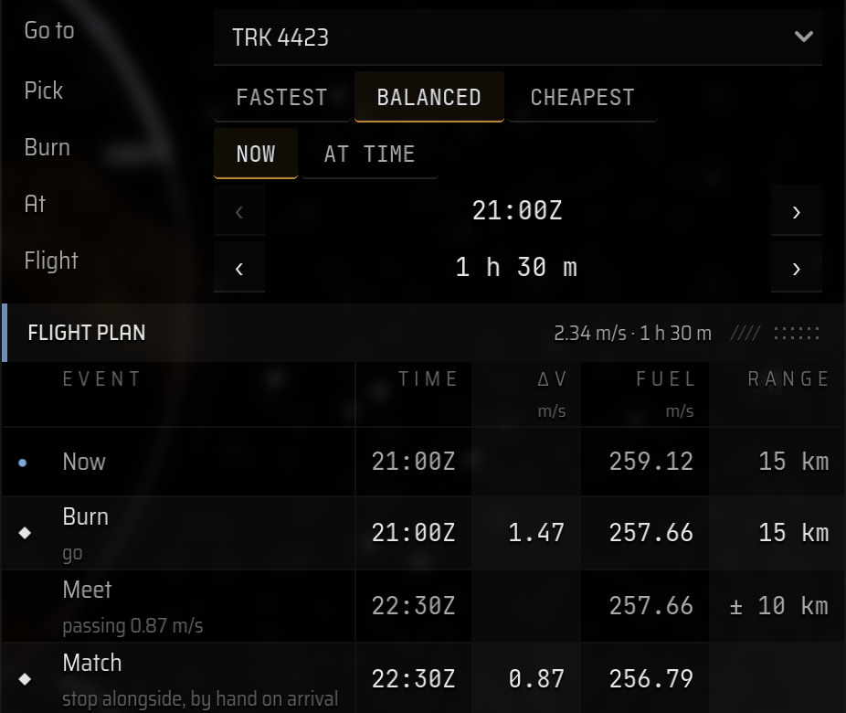
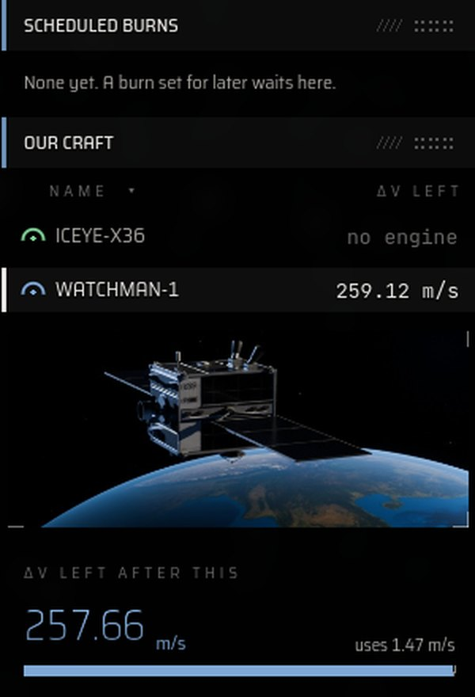
Row
What it does
Go to
A list: every craft you know of, preset orbits, the orbit another craft is on, the Moon, and Earth–Moon L1 to L5.
Pick
FASTEST gets there soonest you can afford. CHEAPEST spends the least, taking longer. BALANCED (the default) is a fair trade. Cheapest and Balanced count the stop at the end too.
Burn
NOW or AT TIME.
At
Step through the burn times the planner solved (‹ ›).
Flight
Step through the flight times (‹ ›).
Behind the picks is a grid of burn times (now, then every 1½ hours for a day) against flight times (1 to 6 hours for a nearby craft). At and Flight walk it by hand.
The flight plan
Each row is an event, with its time (UTC), its Δv, the fuel left after it, and the range to the target:
Now: where you are.
Burn · go: the first burn.
Meet · passing 0.87 m/s: you arrive, still moving that fast past it. Range is how sure you are of where it will be.
Match · stop alongside, by hand on arrival: the second burn. You press Match orbit yourself when you get there.
Going to an orbit, the Moon or a Lagrange point, the arrival burn is automatic: the engine schedules it for you.
Preset orbits
Go to
Low × high
Tilt
Low, circular
500 km
yours
Sun-synchronous
700 km
about 98°
Medium (GPS)
20,180 km
55°
Transfer to GEO
250 × 35,786 km
27°
Geostationary · Above GEO
35,786 · 36,086 km
0°
Molniya · Tundra
600 × 39,700 · 24,400 × 47,100
63.4°
Each preset adds Low · high and Tilt · node steppers so you can describe any orbit. Orbit · the one X36 is on joins another craft's orbit without meeting it.
With 260 m/s
WATCHMAN-1 can't reach GPS, GEO or the Moon. The planner still draws the cheapest way, dashed in amber, with its price. It is a good way to see how expensive space is: going from low orbit to GEO costs at least 4 km/s, fifteen times what you carry.
The planner17
6 · The planner
Checks and the Picture
Before you burn, the planner checks the plan and draws what it will do. Read both: they tell you what could go wrong.
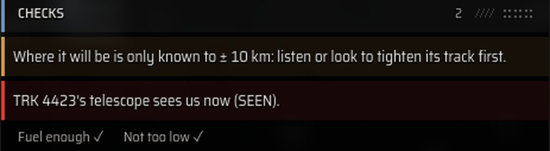
Check
Colour
What it means
Fuel enough
red
You can't afford the burn at all.
Fuel to stop
amber
You can get there but not stop. Plan cheaper.
Not too low
red
The path dips below 122 km, where the air would bring you down.
Arrive ± 10 km
amber
Where the target will be is only known to that size. Listen or look to tighten the track first. Under 5 km it passes.
Seen COLD · WARM · SEEN
clear · amber · red
Whether Cosmos's telescope can see you now, and when that next changes (page 24).
The picture
Soft blue
Your orbit now
White
The planned path
Dashed sand
The orbit you're going to
Dashed amber
A way you can't afford
White ring, red ticks
The burn point and its size
Amber ring
The meeting point
Faint dots show where the Earth hides a line. Orbits are drawn at their true tilt.
The timeline under it
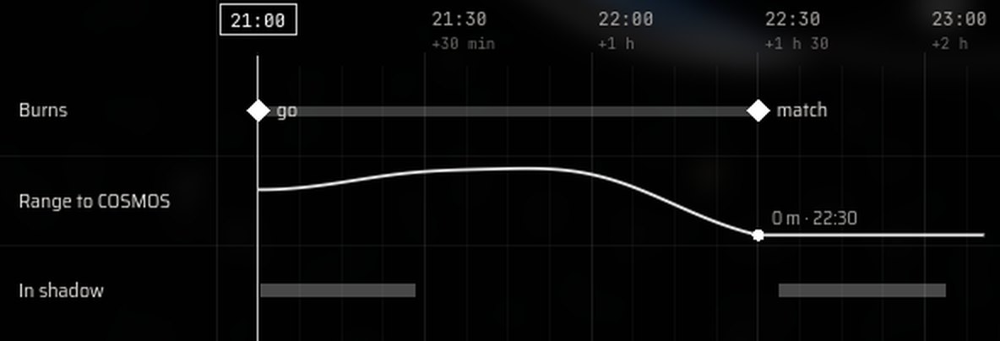
Filled diamonds are burns (◆ go, ◆ match); outlines are automatic steps. Going to a craft you see the range falling to 0 m at the meeting, and when you're in shadow on the way.
Burn
Ready · fires the moment you press Burn means go. Burn now flies it at once. Set a later time and the button reads Burn at 22:30Z: the burn waits in SCHEDULED BURNS and fires by itself.
The planner18
6 · The planner
Tactical: Close Moves
Up close, you don't plan transfers. You give a small push and watch where it carries you over the next two orbits, drawn round the target.
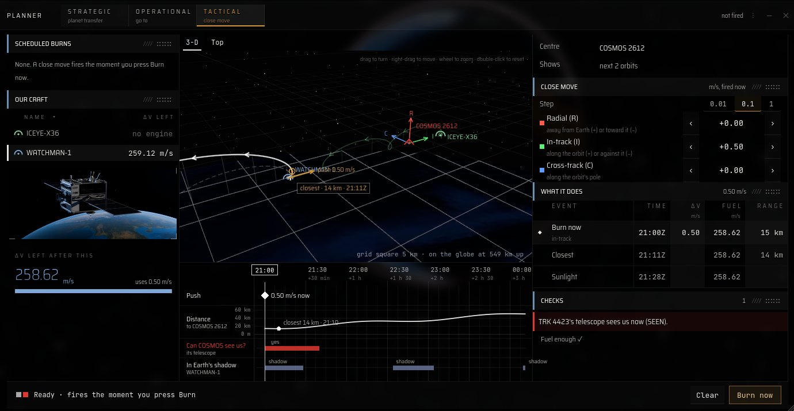
A push of +0.50 m/s along the orbit, drawn round Cosmos 2612. The amber label marks the closest pass: 14 km at 21:11Z.
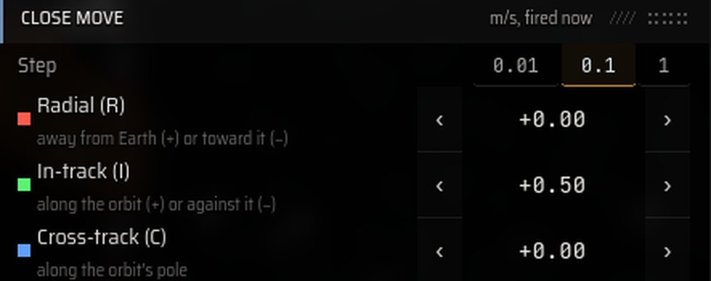
Set a push in three directions, each with ‹ › buttons. Step picks how much each click adds: 0.01, 0.1 (the default) or 1 m/s. Clear zeroes it. Burn now fires it at once; a close move can't be scheduled.
Radial (R)
Away from the Earth (+) or toward it (−).
In-track (I)
Along the orbit (+) or against it (−).
Cross-track (C)
Sideways, along the orbit's pole.
What each push does
Orbits don't behave like cars. These three rules are all you need:
Push forward (+I) and you drift behind. The extra speed raises the far side of your orbit; a higher orbit is slower, so you fall back. Push backward (−I) to drift ahead.
A radial push makes a loop. +R or −R swings you in an oval round where you were, once an orbit, with no drift. Good for circling a target.
A cross-track push swings you side to side, crossing back once an orbit.
The WHAT IT DOES table gives the push, the closest pass, and when you next enter shadow and sunlight. The timeline adds Can COSMOS see us? with its telescope.
The tab turns on the Proximity frame layer and brings the main camera in close.
Rule of thumbIn low orbit, 0.1 m/s along the track moves you roughly 1.7 km per orbit. Tiny pushes, patiently, do the work.
The planner19
6 · The planner
Further, and by Hand
The planner reaches the Moon and the planets too, and you can always plan a burn by grabbing your own orbit and dragging it.
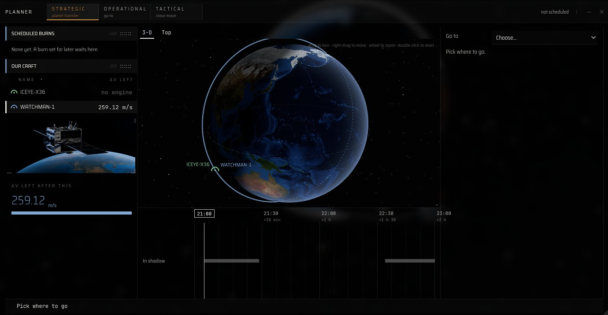
STRATEGIC: a trip to another planet. Its timeline row Cost to leave runs from teal (cheap) to amber (dear) by departure date.
Strategic
Go to any planet. Set the orbit to arrive in (Arrive in and Tilt), when to leave, and the flight time, in days. Speeds are in km/s. The engine corrects the burn under full gravity on the way, aims at the low point, and brakes into orbit by itself.
The Moon and the Lagrange points
In OPERATIONAL, The Moon · an orbit round it picks a height (100 km to begin) and tilt. Earth–Moon L1 to L5 are the five balance points. The picture centres on the goal, shows the Moon's month-long path, and how far you would drift from a point in a week. L1 to L3 are unstable; L4 and L5 are stable.
WATCHMAN-1 can't afford any of these. They are there because the engine can.
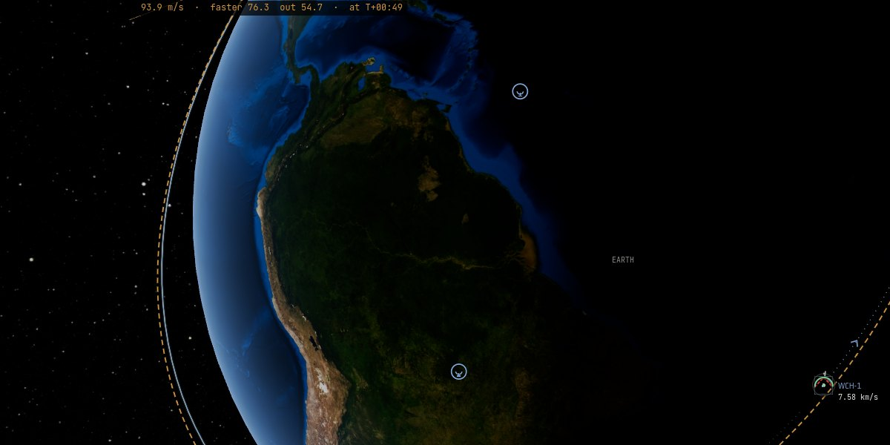
Dragging the orbit: the new orbit swings out in dashed amber, and the box gives the burn: its size, how much faster or slower, how much out or in, and when.
Drag an orbit
Press the left button on your own orbit line, at the point where you want to burn.
Drag along the line to speed up (forward) or slow down (back), and across it to push out or in. Each pixel is 0.5 m/s.
Watch the new orbit and the readout, such as 2.8 m/s · faster 2.1 out 1.8 · at T+00:42.
Let go. The burn is set for the next time you pass that point, and the log says so.
Right-click or Esc while dragging cancels. Under 0.1 m/s does nothing. Holding Shift stops a drag starting, so you can turn the view instead. The preview is simple two-body motion; the burn itself flies under full gravity.
The planner20
7 · The telescope
Look
WATCHMAN-1's 0.3 m telescope is how you see Cosmos 2612 for yourself. From far off it is a point of light. Close in, it is a hull you can name.
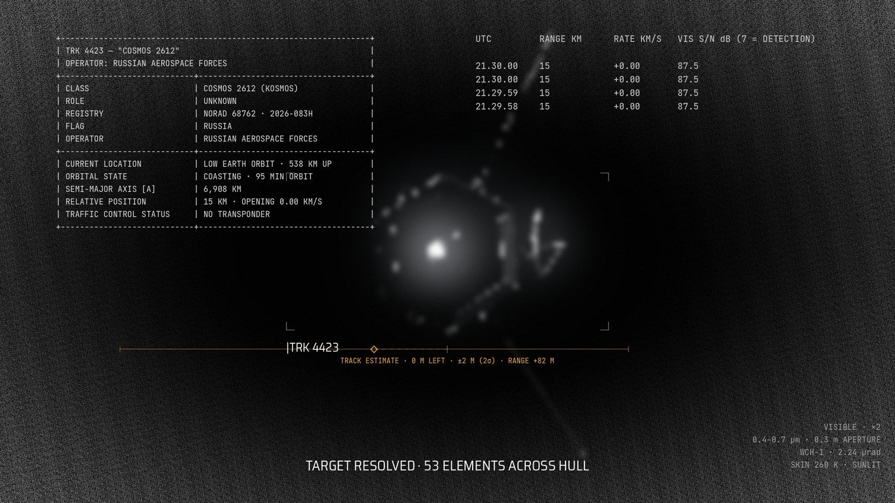
TRK 4423 at 15 km: TARGET RESOLVED · 53 ELEMENTS ACROSS HULL. Top left, the data table; top right, the reading log; the bracket marks where your track says it is.
Using it
Select a contact and press 2Look or I. V switches between visible light and infrared on ships that have both (WATCHMAN-1 has visible only). Esc closes it.
What the caption tells you
TARGET RESOLVED
You see the hull, so many pixels across.
UNRESOLVED · POINT SOURCE
A dot. Seen, but too far to show shape.
BELOW DETECTION
Too faint to pick out.
IT IS IN EARTH'S SHADOW
Nothing to see in visible light. Wait for the Sun.
NO LINE OF SIGHT
The Earth is in the way.
DRIVE BURNING
You caught it firing its thrusters.
The telescope works for you all the time
You don't need the view open. Every 10 minutes WATCHMAN-1's telescope looks at each contact it tracks, and each sighting tightens the track. But it can only see a target that is:
in sunlight: in Earth's shadow there is nothing to reflect;
not against the Earth's bright face, or close to its edge;
bright enough for its distance.
Close in, the telescope also measures range from how big the hull looks: to about 30 m at 5 km, 0.5 km at 20 km, nothing useful past about 160 km. It can name a hull inside about 60 km.
Why this matters
The ground radars see Cosmos only on their passes. In between, your telescope keeps the track good, but only on the sunlit part of each orbit. That is why the custody goal rewards staying near.
The telescope21
8 · The Listening station
Listening
Cosmos 2612 reports home in short radio bursts. The Listening station (F2) is your receiver: it shows each burst arriving live, records it, and lets you work out who sent it.
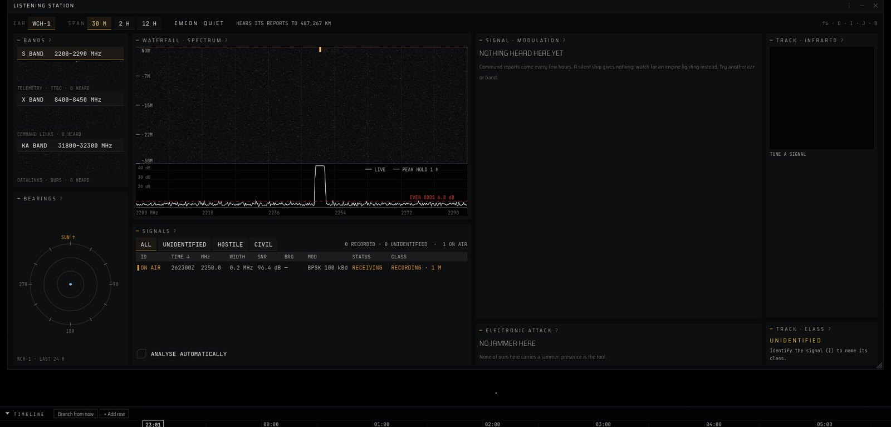
A burst arriving: the bright stripe on the waterfall and the peak on the spectrum at 2,250 MHz, in S band, while the recording list shows it ON AIR.
Across the top
EAR
The receiver you listen from. In CLOSE PASS, only WCH-1.
SPAN
How much time the waterfall shows: 30 M, 2 H or 12 H.
EMCON
QUIET or LOUD.
HEARS ITS REPORTS TO
How far away this ear hears a report half the time, worked out live.
Bands
S BAND
2200–2290 MHz · telemetry and control. Cosmos 2612 talks here, at 2,250 MHz.
X BAND
8400–8450 MHz · command links
KA BAND
31800–32300 MHz · datalinks
Each band has a small live waterfall under its button. B steps to the next band. The station jumps to the band of the newest recording.
Waterfall and spectrum
The waterfall is frequency across and time down, newest at the top. A burst is a bright dash; one still on the air has a pulsing amber cap. Hover for its frequency and time; click to tune to it.
The spectrum under it is the receiver right now (the white LIVE trace) over a one-hour peak hold. The red dashed line EVEN ODDS 6.8 dB is where a burst is heard half the time.
When it talks
A first report within the first three hours, then every 3 to 6 hours, and one after each move. Each lasts 2 minutes.
Only while its ground station near Moscow can see it, so reports bunch on passes over Russia.
It goes quiet for 6 hours if it sees one of ours burning, hears us, or one of ours is within 10 km.
SoListen before you close in. Once you're within 10 km it stops talking.
The Listening station22
8 · The Listening station
Working a Signal
A recording is a clue. Measure it, find where it came from, and match it to a known radio, and you know who is talking.
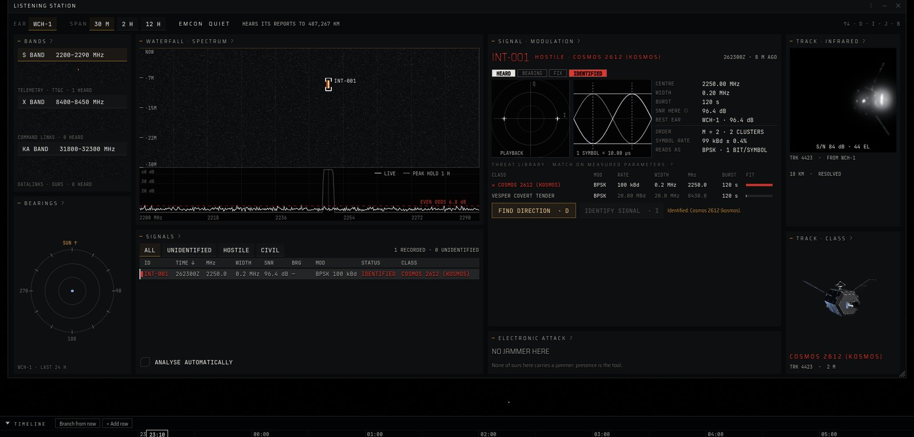
INT-001 worked: the four-dot constellation and eye diagram read as BPSK at 100 kBd, the threat library matches it to Cosmos 2612, and the status reads IDENTIFIED.
The recordings list
Filters: ALL, UNIDENTIFIED, HOSTILE, CIVIL. Columns: ID (INT-001…), TIME, MHz, WIDTH, SNR (strength), BRG (bearing), MOD, STATUS and CLASS. ↑↓ step through it.
Status goes HEARD → BEARING → FIX → IDENTIFIED. Recordings stay in the list all game, but you can only work one for 1 hour after the burst ends.
Reading the signal
Count the dot clusters in the constellation: 2 or 4 is BPSK or QPSK, 8 is 8PSK. The eye diagram's gap is one symbol. The readouts give centre, width, burst length, SNR HERE ⓘ, order, symbol rate and READS AS.
The threat library lists known radios, best fit first, with what agrees shown bright.
The two buttons
FIND DIRECTION · D
Takes a bearing from every ear that heard it. One ear gives a line; two ears far apart cross to a place. With one ear, a bearing still tightens a track you already have.
IDENTIFY SIGNAL · I
Names its class and side. Needs the burst to have ended, and at least 15 dB at the best ear. No bearing needed first.
Too weak? The hint says so: wait for a stronger report or get closer (but not within 10 km).
ANALYSE AUTOMATICALLY works every recording as it arrives. Handy, but you learn nothing.
Click SNR HERE ⓘ to see the whole link budget, term by term (page 26).
Signals window
Stations › Signals: a small window with the six newest recordings. Click one to open the station on it.
The Listening station23
9 · Being seen
The Heat Forecast
Cosmos 2612 watches you too, with a small infrared telescope. The heat forecast (F7) shows how plainly it sees you now and over the coming orbit.
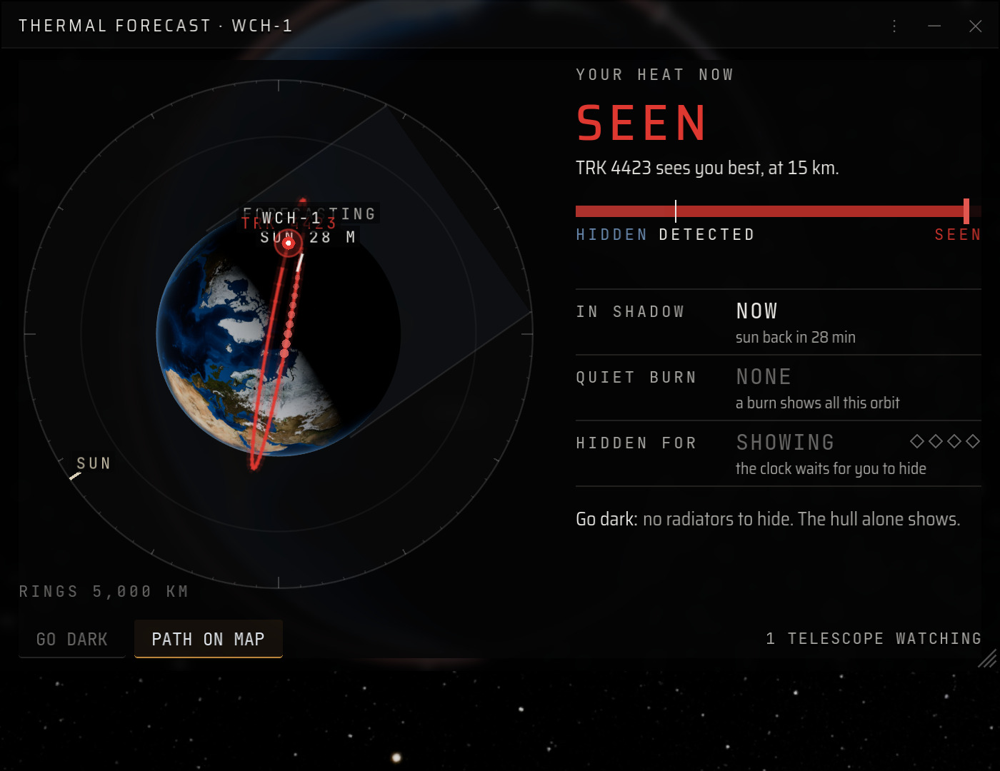
The forecast at the start: SEEN. TRK 4423 sees you best, at 15 km. Left, your orbit from above the North Pole, coloured by how visible you'll be, with the Earth's shadow and the Sun.
Word
Means
COLD
Hidden. Its chance of seeing you on a look is 2 % or less.
WARM
Seen now and then.
SEEN
Seen on most looks.
—
No Red telescope is known.
The right side gives YOUR HEAT NOW, a meter from HIDDEN to SEEN, and three rows: NEXT SHADOW, QUIET BURN (the best moment to burn unseen) and HIDDEN FOR.
It looks one orbit ahead (at least 3 hours), assumes everyone coasts, and places Red's telescope where your track says it is.
Why being seen matters here
In most games you want to hide. In CLOSE PASS you mostly want the opposite: crowding only works if Cosmos can see you. When you park within 5 km, check SEES US in the Selected item. If it reads 0 %, wait for a better angle.
Being seen has a cost too. When it sees you burning, it goes quiet on the radio for six hours, so you hear nothing.
Going dark
The GO DARK button stores a ship's waste heat in a heat sink so its radiators go cold. WATCHMAN-1 has no radiators and no sink, so it is greyed: Go dark: no radiators to hide. The hull alone shows.
PATH ON MAP draws the forecast on the 3-D view in the same colours.
Streaks
Hours spent COLD without a break earn ranks: QUIET at 1 h, DARK at 6 h, BLACK at 24 h, GHOST at 72 h.
Being seen24
10 · Tracking
Tracks and Radars
You never see Cosmos 2612 directly. You see your track on it: a best guess, built from every sighting, that grows less sure with every minute it isn't seen.
A track is a belief
Cosmos 2612 is in the public catalogue, so you start with a track about 200 m off, already named. From then on:
Each sighting tightens it. Sensors look every 10 minutes. Radar fixes come every 10 seconds during a pass.
Between sightings it widens. The track coasts on full gravity, but small unknowns grow.
A bearing alone can't tell range. Only radar and the telescope's hull size do.
Unseen burns. When a sighting lands far from where the track expected, the tracker decides Cosmos burned without being seen and widens the track enough to explain it (1, 5, 20 or 50 m/s).
Seen burns are sized. If your telescope catches its thrusters, you get TRK 4423 just burned. It's on the move. Later fixes size it: TRK 4423 burned about 0.6 m/s (give or take 0.1).
Custody
The custody goal counts a track as good when it is sure to within 1 km and right to within 1 km. You need that 80 % of the time. FIX ±0 KM · NOW in the Selected item is the quickest check.
The five radars
All always on. Each fixes a craft only while it is above the radar's lowest angle and within its reach. The Timeline row shows each pass.
Name
Where
Lowest · reach
PFISR
Poker Flat, Alaska · UHF
45° · 3,000 km
MSR
LeoLabs Midland, Texas · UHF
30° · 3,000 km
ASR
LeoLabs Arizona · UHF
20° · 3,000 km
KSR
LeoLabs Kiwi, New Zealand · S band
40° · 1,500 km
FENCE
Space Fence, Kwajalein · S band
20° · 3,000 km
Each measures range to about 15 m and angles to a few hundredths of a degree. A pass lasts a few minutes; there can be hours between them.
Lost, then dropped
In contact
Seen on the last look. NOW, a beating dot.
Out of contact
Not seen: Lost sight of TRK 4423. Shown dashed at its last known position.
Dropped
Unseen for 24 hours, or too unsure to say where it is.
Tracking25
11 · Reference windows
Database, Campaign, Sums
Three windows tell you what things are, how the mission stands, and how a number was worked out.
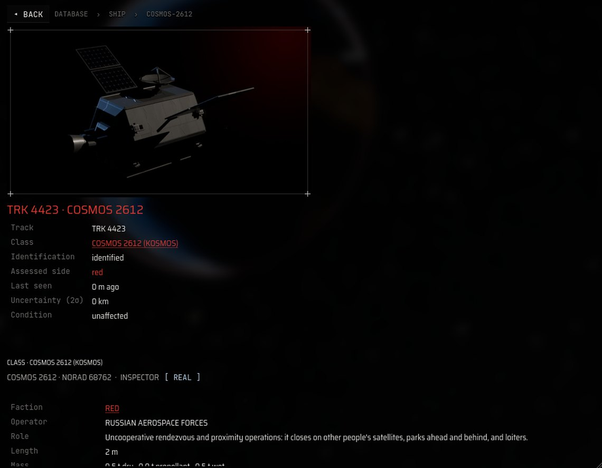
Database F5
With something selected, F5 opens its page. Search on the left (names, types, equipment); ◂ BACK and the path along the top; every underlined name is a link.
A craft page gives its track, class, identity, side, when last seen, its uncertainty and its condition. Your own ships show fuel left. A class page gives size and mass, then what the physics makes of the equipment: Δv when full (with the sum written out), thrust, acceleration, burn time; what each sensor can see and how far; what it transmits; how easy it is to see; and how real each number is.
A Red class only appears once you've classified one of its ships. The radar sites each have a page with their limits and sources.
Campaign F1
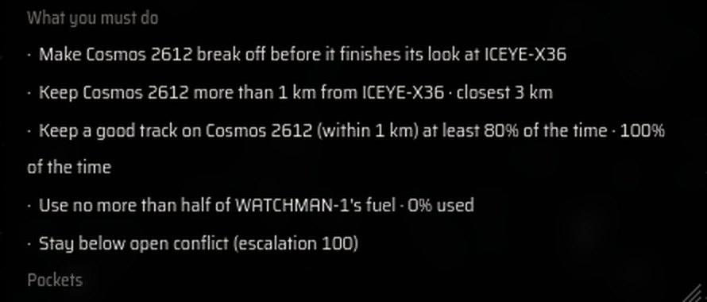
What you must do: each goal with + done, × failed or · open, and its progress: closest 3 km, 100 % of the time, 0 % used. The title says the day, day 1 of 2.
Below, the kill chain for the selected Red track: Heard, Located and identified, Following, Ready to decide, Acted, Out of the fight.
The sums
Click SNR HERE ⓘ in the Listening station and the Inspector opens: each term of the radio link budget, from transmit power through antenna gains, free-space loss and receiver noise to integration over the burst, with its value and the standard behind it, then the total and the chance of hearing it. It follows the live geometry while open.
With doctrinal terms on, hover cards show formulas too.
Solar system
Stations › Solar system: a live chart of the Sun and planets, from JPL's positions, with each one's distance and the cheapest trip there.
Reference windows26
12 · Your opponent
How Cosmos 2612 Behaves
Cosmos 2612 follows simple rules, and knowing them is most of the game. It wants three good looks at X36. It doesn't want company.
Its plan
Three stops, after the real one's reported moves. Each hop takes about 3 hours and two burns (go, then stop):
Stop
Where
Holds for
1
2 km behind X36
6 hours
2
2 km ahead of X36
6 hours
3
0.8 km behind X36
8 hours
Left alone, it finishes in about 29 hours, burns away and you lose. Stop 3 is inside X36's 1 km keep-out, which also costs you points.
When you crowd it
It keeps 5 km clear round itself. If WATCHMAN-1 comes within 5 km while it is parked and it can see you, it gives way: it moves to a new spot 8 km off, on the far side of X36, taking about 2 hours, and holds there 4 hours.
It gives way twice. The third time you crowd it, it gives up: a 4 m/s burn forward, and it climbs away and drifts off. Once it is 200 km from X36, it has left. (In the tutorial it gives way once and leaves the second time.)
When it is alone
If it sees none of ours within 50 km when a stop ends, it moves in: its next spot is at half the distance, never nearer than 0.5 km. Stay near and it keeps its distance.
Tension
Escalation only rises; nothing in CLOSE PASS brings it down.
It parks in X36's keep-out+3 each time
You crowd it+5 each time
You within 1 km of it+12 an hour
It turns cautiousat 25
It leaves at onceat 50
Open conflictat 100: you lose
At 25 it gives way one time fewer, and stops moving in when alone. At 50 it leaves the next time you crowd it. Pushing hard wins sooner, but costs score and risks war. Warnings appear in the log at 25, 50 and 90.
Its radio
Reports every 3 to 6 hours and after each move, 2 minutes long, on 2,250 MHz, only while its station near Moscow is above the horizon. Quiet for 6 hours after it sees one of ours burn, hears us, or finds us within 10 km.
Its eyes
It sees WATCHMAN-1 only through its own small infrared telescope. That is why SEES US matters: crowding a ship that can't see you does nothing.
In the log
"TRK 4423 doesn't want our inspector that close: it's moving to the far side of X36."
Your opponent27
13 · The tutorial
24 Steps
A new game starts with the tutorial card at the top left. Each step names one thing to do and ends when you've done it. There is no Next button: you learn by doing.
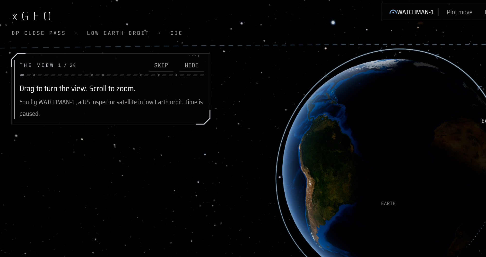
SKIP moves on. HIDE tucks the card away and leaves a small TUTORIAL · SHOW key at the top. Time starts paused. When a wait ends at a high time rate, time stops so you can read the card. Over the Listening station the card shrinks to one line.
In the tutorial Cosmos gives way once and leaves the second time it is crowded, so a full run takes less time.
#
Step
What you do
1
Welcome, operator
Drag to turn the view; scroll to zoom
2
Look anywhere
Right-drag to slide the view
3
The satellite
Click X36 in the Overview
4
Centre on it
Double-click X36
5
The inspector
Click TRK 4423
6
Who's who
Click the Ours tab
7
The database
Stations › Database (F5)
8
Your orders
Esc, then Stations › Campaign (F1)
9
Map layers
Esc, then View › Map layers (L)
10
Your words
Esc, then View › the other Terms
11
Let time run
Speed up to 60× (])
12
The Listening station
Stations › Listening station (F2)
13
Hear it
Click its newest report when it appears
14
Identify
Press IDENTIFY SIGNAL
15
The link budget
Click the SNR number
16
What you've heard
Esc twice, then Stations › Signals
17
Plot a move
Esc; select TRK 4423; Plot move
18
Go
Pick a move and press Burn
19
Look closer
Hover over TRK 4423
20
The telescope
Look (I); Esc closes it
21
Close in
On arrival, Match orbit within 5 km
22
Every option
Right-click TRK 4423
23
Stay on it
Plot a move to it again; Match on arrival
24
Seen off
Let time run to the debrief
The tutorial28
14 · Walkthrough
Part 1: Get Your Bearings
Your orders
Know where everyone is, and hear it, before you move. Once you're close it stops talking.
1Meet the players
Click X36, then TRK 4423, in the Overview
X36 is 20 km ahead of you; TRK 4423 is Cosmos 2612, 15 km away, parked behind X36. Double-click each to see where it is. The Selected item shows TRK 4423's telescope already sees you.
2Read your goals
F1 Campaign · Esc closes it
Five goals. The two that lose the game: let it finish its look, or reach escalation 100. The others are points: keep it off X36, keep a good track, save fuel.
3Read the timeline
The Timeline, bottom
Cosmos's next closest pass to X36, the radar passes, and when you're in sunlight. Add a row for WCH-1 within 5 km of TRK 4423: you'll want it later.
4Listen
F2 · S BAND · ] to 60× or 600×
Its first report comes within about three hours, while it's over Russia. Watch the waterfall: a burst appears as a bright stripe at 2,250 MHz and the spectrum jumps. When it ends it's logged as INT-001.
5Identify it
Click INT-001 · D find direction · I identify
Count the four dots: BPSK. The library matches Cosmos 2612. Now you know who is talking, and the bearing tightened your track. Do it within an hour of the burst.
MeanwhileCosmos is hopping to its first stop, 2 km behind X36. The log says TRK 4423 has parked 2 km behind X36 about three hours in. That's your moment.
Walkthrough29
14 · Walkthrough
Part 2: Close In
Your orders
Get alongside it. The planner does the orbital maths; you choose how fast and how much fuel. Arriving isn't stopping.
6Plot a move
Select TRK 4423 · 1 Plot move
The planner opens on OPERATIONAL, going to TRK 4423. Read the CHECKS: if the track is only known to ±10 km, a radar pass or a look will tighten it before you go.
7Pick, then burn
BALANCED or CHEAPEST · Burn now
From the start, BALANCED flies in 1 h 30 m for 1.47 m/s and 0.87 m/s to stop. CHEAPEST waits and flies longer for about half that. Either is a tiny slice of your 259 m/s.
8Coast
] to 600× · Space to pause near the end
The move shows on the map as PLANNED MEETING with a countdown. Slow to 60× for the last few minutes.
9Look at it
Select TRK 4423 · 2 Look · Esc closes
In sunlight, close in, the telescope resolves the hull and measures range from its size. In Earth's shadow it sees nothing: wait for the Sun.
10Match orbit
3 Match orbit, on arrival
Cancels the last bit of speed so you stay beside it. Stop within 5 km of it, but more than 1 km away.
FuelAbout 260 m/s for two days and no refuelling. The fuel goal wants half or less used; full marks at a quarter. Moves of a few metres a second leave plenty.
Walkthrough30
14 · Walkthrough
Part 3: Stay On It
TRK 4423 · how it behaves
It keeps 5 km clear round itself. Crowd it while it's parked and it moves away. Leave it alone and it creeps closer to X36.
11Make sure it sees you
Selected item · SEES US
Crowding only counts if its telescope sees you. A high SEES US means it does. Then you get: it's moving to the far side of X36. +5 escalation.
12Follow it
1 Plot move again · or TACTICAL for short hops
It moves to a spot 8 km off on the far side of X36. Plot a move to it once it parks, then Match orbit. For a hop of a few km, TACTICAL pushes of tenths of a m/s are cheapest.
13Mind the gap
Stay more than 1 km from it
Each crowding adds 5. Inside 1 km of it, escalation climbs 12 an hour. At 25 it gives way one time fewer; at 50 it leaves the next time you crowd it.
14See it off
Crowd it a third time
It gives up: has given up on X36 with our inspector on it, and is leaving. It climbs away. Once it is 200 km from X36, the operation ends.
It moved closer to X36?
When none of ours is within 50 km at the end of a stop, it takes its next spot at half the distance. Stay within 50 km and it keeps its distance.
Nothing happens?
It gives way only while parked. If it's mid-hop, wait for the log to say it has parked, then close within 5 km.
Walkthrough31
15 · After the operation
The Debrief
When the operation ends the view holds a few seconds on the craft it turned on, under OPERATION COMPLETE, OPERATION FAILED or THE 2 DAYS ARE UP. Click to skip. Then the debrief.
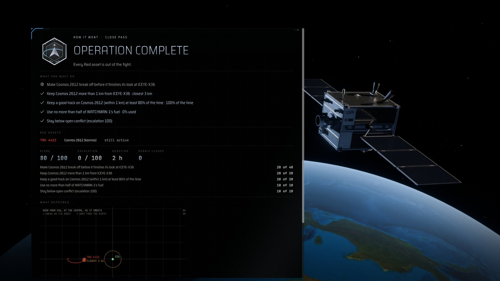
What it shows
The result and why: the line that decided it.
What you must do: each goal with a tick, cross or clock, and its progress.
Red assets: TRK 4423, its class, and its fate (still active, or out of the fight).
SCORE / 100, final ESCALATION, DURATION, debris clouds, then each goal's points, such as 20 of 20.
What happened: the replay, beside a list of every event about Cosmos (stops, give-ways, burns seen, tracks lost). Click a line to see that moment.
Advice for each goal you missed.
BACK TO THE TITLE ends the game and deletes the save.
The replay
A picture in X36's own frame: X36 at the centre with its 1 km keep-out ring, → AHEAD ON ITS ORBIT and ↑ AWAY FROM THE EARTH. Your path in blue, Cosmos's in red, the closest moment ringed.
PLAY
The whole mission in 20 seconds; again to pause
CLOSEST
Jump to the closest moment
Slider
Scrub through it
Wheel · drag
Zoom about the pointer · move
Double-click
Fit it all
The endings
It leaves
Crowded one time too many, it gave up and left. No weapons, no war.
It finished
All three stops done. Try: get alongside sooner and stay within 50 km.
Open conflict
Escalation reached 100. Try: keep more than 1 km off; crowd only when needed.
Time ran out
Two days, still at work: half marks for the first goal. Try: crowd it earlier.
After the operation32
16 · Field guide
Playing Well
Things good players learn, most of them the hard way.
Listen firstIts reports stop once you're within 10 km or it sees you burn. Identify it while you're still 15 km out.
Move when it parksA target mid-hop is a moving goal. Wait for "has parked", then plan.
Always matchA transfer passes; Match orbit stops. Forget it and you sail by at a metre a second.
Use the sunlightYour telescope sees only a sunlit target. The Timeline's sunlight row tells you when.
Be seen when crowdingCrowding needs SEES US. Arriving in Earth's shadow may not count until the Sun comes round.
A track is a beliefCheck FIX before planning. ±10 km means you may arrive somewhere empty.
Cheapest earlySmall moves early cost less than big ones late. Let the orbit do the work.
Not too closeBetween 1 and 5 km is the sweet spot: it gives way, and tension rises only 5.
Branch before big movesBranch from now, try it, and go back to Run 1 if it goes wrong.
Stay within 50 kmOut of reach, it creeps toward X36 and can enter the keep-out.
Pick the right speed60× near it, 600× while coasting, 3K× to wait out a stop. Pause to think.
Mind the clockThree crowdings, each a stop of 4 to 6 hours apart, fit in two days only if you start early.
Three ways to play it
The patient shadow
Close in early, stay 2 to 4 km off, crowd it at each stop. Low tension, full custody, a few m/s of fuel. Slow but scores high.
The hard press
Crowd it at every chance and sit near 1 km. Escalation passes 25 then 50, and it leaves at the next crowding. Fast, but costs the peace points.
The guard
Park beside X36 instead of Cosmos. It keeps its distance because you're within 50 km, and your telescope holds the track. It never leaves on its own, though: at some point you must go to it.
Field guide33
17 · The physics you feel
Why Orbits Are Strange
Everything in xGEO is computed from real physics. You don't need the equations, but these ideas explain what you see.
Falling round the Earth
An orbit is a fall that keeps missing the ground. At 540 km you move at about 7.6 km/s and go round in about 95 minutes. Everything near you is falling the same way, so close in, things barely move relative to each other.
Faster means slower
Push forward and you climb on the far side of the Earth. A higher orbit takes longer, so you end up behind where you started. To catch something ahead of you, you first slow down. The planner handles this; the TACTICAL tab lets you feel it.
Δv is fuel
Fuel is counted as the change in speed it can buy, Δv. The rocket equation sets it from the mass and the exhaust speed: WATCHMAN-1's 75 kg of hydrazine at 2.2 km/s gives about 260 m/s. A move to a craft 15 km away costs 2 or 3 m/s. Going to GEO would cost thousands.
The Earth isn't round
It bulges at the equator, and the bulge slowly turns every orbit. The Sun and the Moon pull too. xGEO Core includes all three, which is why the planner can solve under full gravity and why paths aren't perfect ellipses.
Light and shadow
Up to a third of each low orbit is in the Earth's shadow. A telescope sees a satellite by the sunlight it reflects, so in shadow it vanishes. Infrared sees heat instead, and heat fades more slowly.
Radio follows the square of distance
A radio signal spreads out: twice as far, a quarter as strong. Whether you hear a burst depends on the transmitter's power, both antennas, the distance, and your receiver's noise, all in the link budget. Identification needs a clean copy: 15 dB above the noise.
Knowing is not seeing
Your track is a filter's best estimate with an honest uncertainty. The tracker is tested over many runs to check that its ring is honest: neither too sure nor too timid. When you lose sight, the ring grows; a radar pass or a look shrinks it.
Real, projected, notional
Physics and the real satellites' published numbers are real. WATCHMAN-1 and the scores are notional: invented for play, but everything computed from them follows the physics. Hover cards and the Database say which is which, and the Library gives the sources.
The physics you feel34
18 · Help
Questions and Problems
The F keys do something else
Click inside the game once. Some browsers keep F1 to F7 until the page has your keyboard. The same commands are on the Stations menu.
Match orbit is grey
Select a contact first, then get within 5,000 km. Hover over it: the card ticks off what's missing.
I can't hear anything
Pick S BAND. Reports come every 3 to 6 hours, only while Cosmos is over Russia, and not at all while you're within 10 km or for 6 hours after it sees you burn. Run the clock at 600× and watch the waterfall.
IDENTIFY SIGNAL won't work
Wait until the burst has ended. It needs 15 dB: if it's weaker, wait for the next report. And it must be less than an hour old.
The telescope sees nothing
The target is in Earth's shadow, or the Earth is behind it. Wait for the sunlight row on the Timeline.
I crowded it and nothing happened
It must be parked, you within 5 km, and it must see you (SEES US). Mid-hop it ignores you.
The planner says it can't
"No way there you can fly" means nothing in the next day is affordable or every path dips too low. Try another destination, or wait.
The game is slow
Close windows you don't need, turn off Ship shadows, use a smaller browser window. At high time rates the clock runs as fast as your computer allows.
Where's my save?
CONTINUE on the title screen. It's in your browser's storage for this site; clearing site data removes it. Finishing a game deletes it.
Where is Jupiter?
The whole solar system is modelled, Jupiter and its moons included. Open Stations › Solar system to see where everything is now.
Found a bug?
Use Report a bug on the xGEO site. Say what you did, what you expected and what happened, with the mission time.
Esc, in order
Closes an open menu; cancels an orbit drag; leaves a close-up; closes the telescope; closes the newest window; and with nothing open, saves and goes to the title screen.
View › Terms switches the game between plain words and military ones. Both are here.
2σ (two sigma)Twice the usual error: a size that holds the truth most of the time. Track rings and FIX are 2σ.
Apogee · perigeeThe highest and lowest points of an orbit.
BearingThe direction a signal came from, seen from one ear.
BPSK · QPSKWays of sending bits by shifting a radio wave's phase. Count the dots to tell them apart.
Classify · identifyLearn a contact's type from its signal; name the ship itself from a close look.
Contact · trackSomething you know is there, and your estimate of where it is.
COPCommon operating picture: the shared view of the operation.
CrowdingParking within 5 km of Cosmos while it is parked and sees you.
CustodyKeeping a good track: sure, and right, to within 1 km.
dBDecibels: a ratio on a log scale. +3 dB is double, +10 dB is ten times.
DFDirection finding. Bearings from two places cross at the sender.
Δv (delta-v)The change in speed you can still make: your fuel, in m/s.
Earth's shadowThe part of each orbit the Sun can't reach: up to a third of a low orbit.
EMCONEmission control. QUIET: you only listen. LOUD: you send.
ES · EWElectromagnetic support (listening) · electromagnetic warfare.
EscalationHow close the crisis is to open conflict. 100 ends it.
F2T2EAFind, fix, track, target, engage, assess: the kill chain.
In-track · radial · cross-trackAlong the orbit · up and down · sideways. R, I and C.
Keep-outThe space a craft keeps clear round itself. X36's: 1 km. Cosmos's: 5 km.
Lagrange pointsFive places where the Earth's and Moon's pulls balance.
Glossary37
Words you'll see
Glossary, continued
Link budgetThe sum of gains and losses from a transmitter to a receiver. Gives the SNR.
Match orbitThe burn that cancels your speed relative to a target, so you stay beside it.
NORAD numberA satellite's number in the public catalogue. Cosmos 2612 is 68762.
RPORendezvous and proximity operations: one craft working close to another.
SARSynthetic aperture radar: how X36 images the ground through cloud and at night.
SIGINTSignals intelligence: listening to other people's radio.
SNR · S/NSignal-to-noise ratio: how far a signal stands above the hiss.
Spectrum · waterfallSignal strength by frequency, now; and the same over time, scrolling down.
Sun-synchronousA near-polar orbit that crosses each place at the same local time.
TT&CTelemetry, tracking and command: a satellite's radio link with home.
Two-body motionOrbits with only one pull. A quick preview; the real burn uses full gravity.
UTC · ZThe clock the world's satellites run on. 21:00Z is 21:00 UTC.
Learn more
xGEO Core, the engine under the game, is open source. Its Research Edition describes every model, the sources it rests on and the checks that hold it to them. Both are on the xGEO site.
xGEO Live Operator's Handbook · Alpha 0.5, build 11 · November 2026.
 Get alongside
Get alongside